TP - Patrons de conception avec des classes géométriques¶
Introduction¶
L'objectif de ce TP est de s'exercer à mettre en oeuvre des patrons de conception via la création d'une petite bibliothèque de manipulation des géométries OGC :
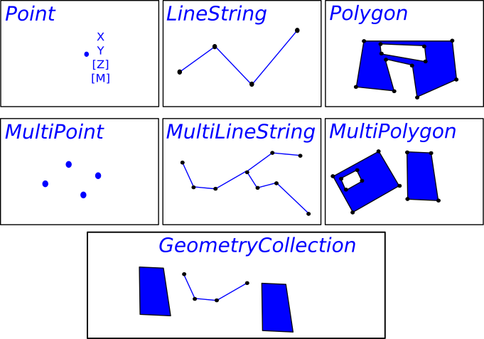
Vous noterez toutefois que ceci n'est qu'un exercice :
- Nous allons réinventer la roue carrée (utilisez plutôt JSTS et Turf.js dans la vraie vie).
- Nous allons sombrer dans la paternite (les patrons de conception ne seront pas la solution à tous les problèmes et nous n'en utiliserons pas autant)
Démarrage¶
- Forker le projet github.com - mborne/tp-geometry-ts
- Cloner le fork
- Lire le fichier README
- Exécuter les tests et afficher le rapport de couverture.
Mise en garde¶
Vous devrez impérativement :
- Livrer un code fonctionnel et testé sur la branche par défaut de votre fork
- Avoir au moins un commit (voire une branche) par question avec un commentaire permettant d'identifier la question (ex
0.1 - ajout de l'interface Geometry et des classes Point et LineString)
Pour ce faire, il vous est vivement conseillé de :
- Lancer les tests automatiques (
npm run test) à chaque étape. - Travailler avec une branche "dev" si vous voulez pousser des résultats non finalisés.
0.1 - Geometry, Point et LineString¶
Objectif : Préparation du TP, utilisation d'interface, encapsulation
Implémenter les trois classes suivantes illustrées sur le schémas ci-après :
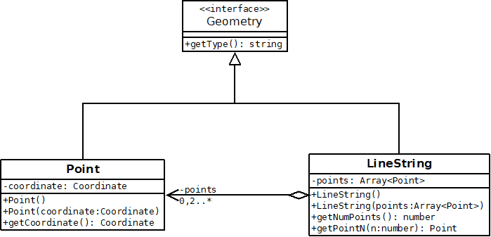
Remarques :
getType()renverra le nom de la classe en CamelCase ("Point"ou"LineString")- Nous nous interdirons de modifier ce comportement dans les questions suivantes (
"POINT""LINESTRING"
0.2 - Geometry.isEmpty()¶
Objectif : Bonne pratique NonNullObject
Afin d'éviter d'avoir à tester des coordinates ou points null ou undefined, nous allons ajouter le concept de géométrie vide :
- S'assurer que la variable membre
pointsdeLineStringn'est jamais nulle (une liste vide est préférable à une valeur nulle). - S'assurer que la variable membre
coordinatedePointn'est jamais nulle (utiliser[]et adapterx()ety()) - Déclarer
Geometry.isEmptyet l'implémenter dansPointetLineString
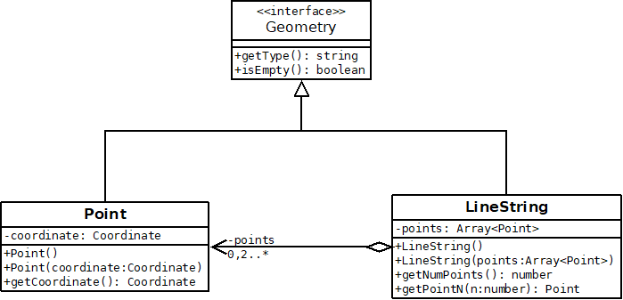
Remarque : Nous ne traiterons pas le cas d'un appel new LineString(points) avec un point null.
0.3 - Geometry.translate(dx,dy)¶
Objectif : Exploiter une interface pour réaliser un traitement spécifique
Ajouter une méthode de permettant de translater une géométrie.
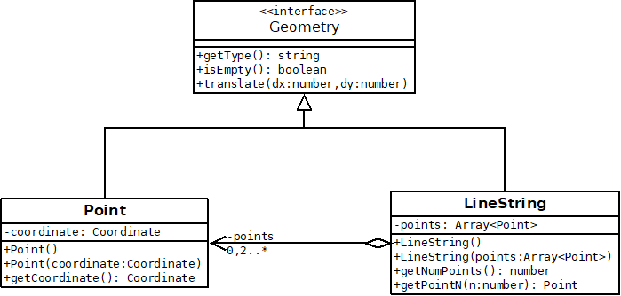
0.4 - Geometry.clone()¶
Objectif : Patron de conception Prototype
En introduisant la fonction précédente, nous avons renoncé à l'idée d'avoir des géométries immuable (non modifiable après construction).
Nous allons donc ajouter une méthode clone() permettant de récupérer une copie d'une géométrie :
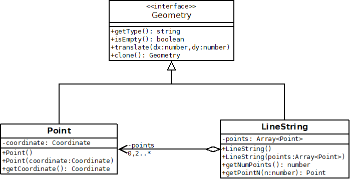
Exemple d'utilisation :
const copy = g.clone();
copy.translate(10.0,10.0);
//... "g" n'est pas modifiée
Remarques :
- Sans
clone(), un traitement particulier serait nécessaire pour copier unPoint, uneLineString, etc. - Nous procéderons à une copie en profondeur pour les seules propriétés non immuables.
0.5 - Envelope et EnvelopeBuilder¶
Objectif : Patron de conception Builder
Nous souhaitons calculer l'emprise d'une géométrie (la bbox). La logique de calcul de min/max en oeuvre étant assez complexe, nous ne souhaitons pas l'implémenter dans les classes Point et LineString.
Nous allons donc procéder comme suit :
- Ajouter une classe
Envelopereprésentant une emprise rectangulaire. - Ajouter une classe utilitaire
EnvelopeBuilderqui aura pour rôle de construire cette emprise.
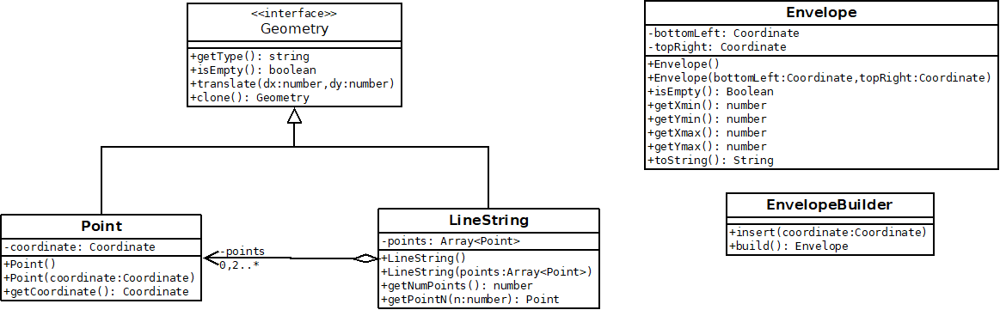
Exemple d'utilisation :
const builder = new EnvelopeBuilder();
builder.insert([0.0,1.0]);
builder.insert([2.0,0.0]);
builder.insert([1.0,3.0]);
// récupération du résultat
const result = builder.build();
Remarques :
- Vous avez la liberté d'ajouter des variables membres privées dans
EnvelopeBuilderpour le calcul. Envelope.toString()renverra une représentation texte (ex :[x_min,y_min,x_max,y_max]) qui pourra faciliter l'écriture des tests.- En cas de difficulté pour faire des calculs de min/max optimaux, vous pouvez par exemple vous appuyer sur deux variables privées
xValsetyValspour exploiter les fonctionnalités standardsMath.minetMath.max(cette approche ne sera pas "optimale", mais elle peut être un premier jet permettant la mise en oeuvre des tests avant optimisation).
0.6 - Geometry.getEnvelope() : Envelope¶
Objectif : Facade sur EnvelopeBuilder
Ajouter une méthode utilitaire sur Geometry pour récupérer facilement l'enveloppe comme suit :
- Déclarer une méthode
getEnvelopedansGeometry - Implémenter cette méthode dans
PointetLineStringà l'aide deEnvelopeBuilder
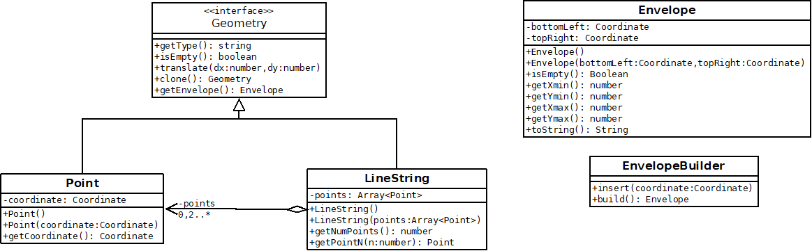
0.7 - WktWriter¶
Objectif : Mesurer l'intérêt d'une conception propre et de GeometryVisitor dans les questions suivantes
Ajouter une classe WktWriter avec une méthode permettant de convertir une géométrie au format WKT qui prendra par exemple les formes suivantes :
POINT EMPTY
POINT(3.0 4.0)
LINESTRING EMPTY
LINESTRING(0.0 0.0,1.0 1.0,5.0 5.0)
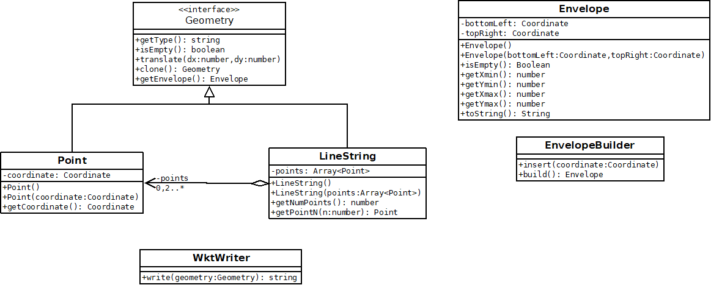
Exemple d'utilisation :
const g = new Point([3.0,4.0]);
const writer = new WktWriter();
// "POINT(3.0 4.0)"
const wkt = writer.write(g);
Remarques :
- Nous ne modifierons pas les classes
Geometry,PointetLineStringpour mettre en oeuvre cette fonctionnalité. - Nous utiliserons un fragment de code du style suivant pour traiter les différents types concrets :
if ( geometry instanceof Point ){
// traiter le cas Point
}else if ( geometry instanceof LineString ){
// traiter le cas LineString
}else{
throw new TypeError("geometry type not supported");
}
0.8 - GeometryVisitor¶
Objectif : Patron de conception Visitor, prise en main
- Ajouter l'interface
GeometryVisitor - Implémenter un visiteur
LogGeometryVisitorqui affiche la géométrie dans la console sous les formes suivantes :- "Je suis un point vide."
- "Je suis un point avec x=2.0 et y=3.0."
- "Je suis une polyligne vide."
- "Je suis une polyligne définie par 3 point(s)."
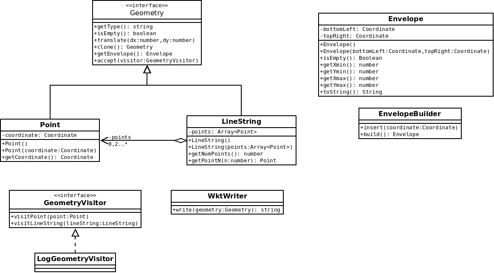
Exemple d'utilisation :
const visitor = new LogGeometryVisitor();
const geometry = new Point([3.0,4.0]);
geometry.accept(visitor);
Remarque : pour les tests, vous pourrez remplacer temporairement console.log par une fonction vous permettant de capturer le résultat.
0.9 - WktVisitor¶
Objectif : Patron de conception Visitor, mise en oeuvre dans un cas concret
Reprendre l'implémentation de WktWriter sous la forme d'un GeometryVisitor en implémentant une classe WktVisitor.
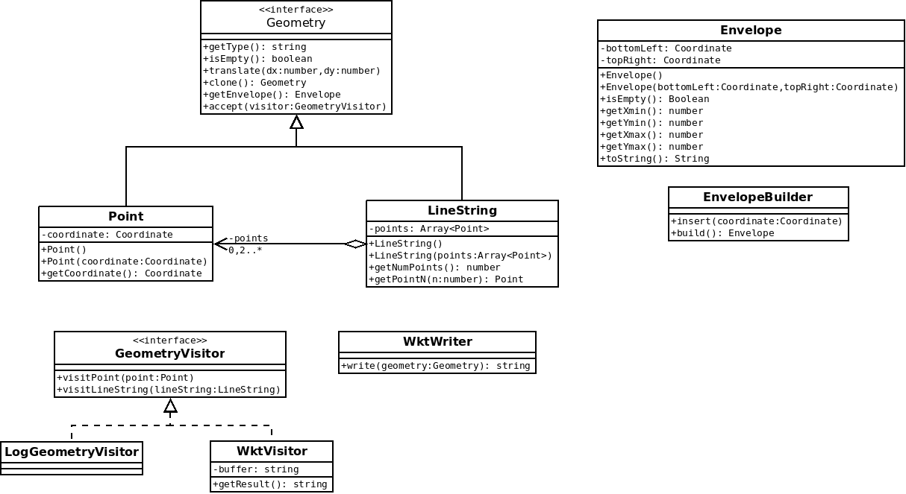
Exemple d'utilisation :
const visitor = new WktVisitor();
const geometry = new Point([3.0,4.0]);
geometry.accept(visitor);
// "POINT(3.0 4.0)"
const wkt = visitor.getResult();
0.10 - Geometry.asText()¶
Objectif : Patron de conception Facade, héritage à trois niveau avec interface et abstract.
A l'aide de AbstractGeometry et WktVisitor :
- Ajouter une méthode
Geometry.asText(): Stringrenvoyant la géométrie au format WKT - Ajouter une classe astraite
AbstractGeometryimplémentant la méthodeasText
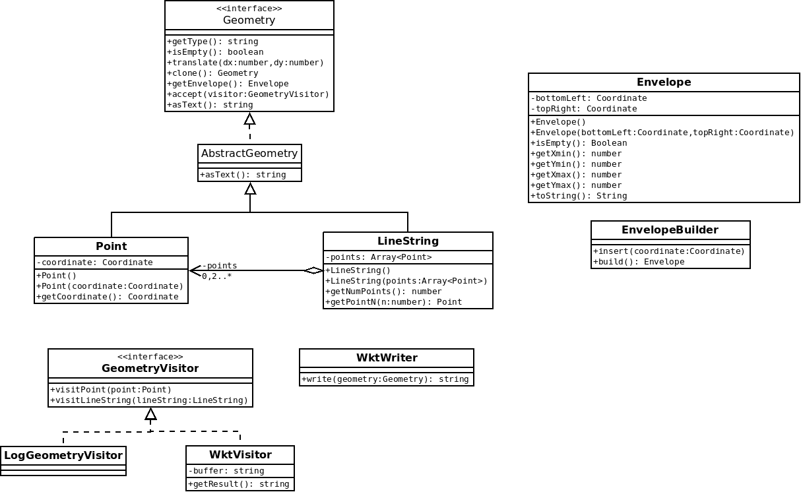
0.11 - EnvelopeBuilder en tant que GeometryVisitor¶
Objectif : Visitor, refactoring (extraction de l'implémentation d'une fonctionnalité)
- Transformer
EnvelopeBuilderenGeometryVisitor - Remonter l'implémentation de
getEnvelopedansAbstractGeometry
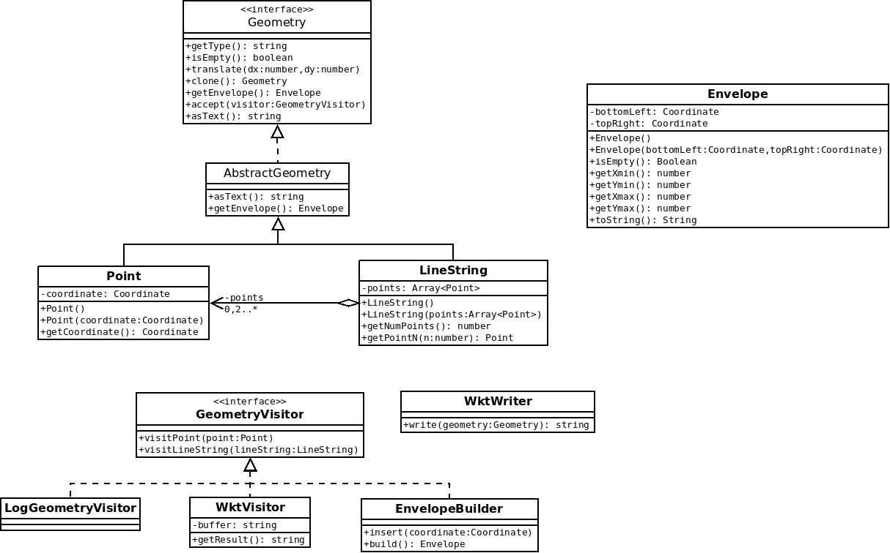
0.12 - GeometryWithCachedEnvelope¶
Objectif : Patron de conception Decorator
- Implémenter une classe
GeometryWithCachedEnvelopequi permet de mettre en cache le calcul de l'enveloppe
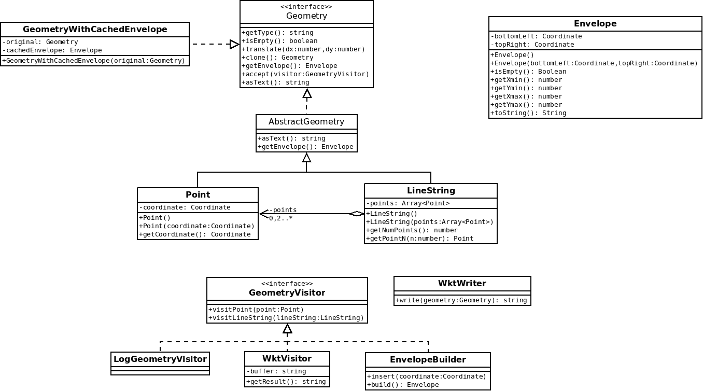
Exemple d'utilisation :
const g = new Point([3.0,3.0]);
// décoration
g = new GeometryWithCachedEnvelope(g);
const a = g.getEnvelope() ; // calcul et stockage dans cachedEnvelope
const b = g.getEnvelope() ; // renvoi de cachedEnvelope
// a et b sont la même instance
Remarque : Nous invaliderons ce cache dans translate(dx,dy).
0.13 - GeometryCollection¶
Objectif : Patron de conception Composite, Refactoring
Ajouter une classe GeometryCollection représentant une géométrie multiple, adapter les autres fonctionnalités.
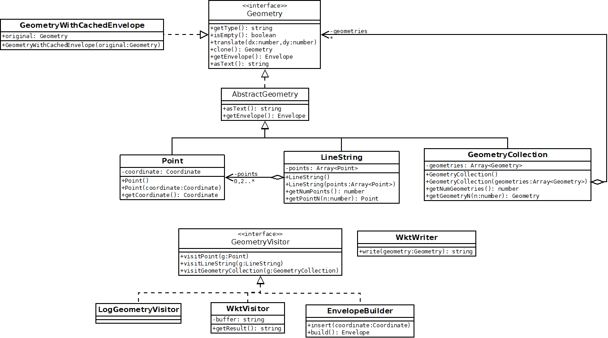
Remarque : Le format WKT prendra la forme suivante pour les GeometryCollection :
GEOMETRYCOLLECTION EMPTY
GEOMETRYCOLLECTION(POINT(3.0 4.0),LINESTRING(0.0 0.0,1.0 1.0,5.0 5.0))
0.14 - GeometryVisitor renvoyant un résultat¶
Objectif : Exploiter les classes génériques, adapter le patron visiteur au contexte.
Pour avoir la capacité de renvoyer des résultats avec des types variables :
- Transformer la classe
GeometryVisitorenGeometryVisitor<T>. - Adapter les visiteurs existants ne renvoyant pas de résultat en implémentant
GeometryVisitor<void>. - Ajouter une classe
LengthVisitor<number>renvoyant la longueur de la géométrie en guise de démonstration (0.0 pour un point)
const visitor = new LengthVisitor();
const result = geometry.accept(visitor);